Instalación, Mantenimiento y Reparación · 7° año Informática — ILM
El Sistema Eléctrico Argentino
Guion didáctico · Unidad 01 · Prof. Pedaci, Lourdes · Instituto Leonardo Murialdo
8 pasos
De la generación al consumidor final
Introducción · Diagrama MEM 01 — bloque superior
El Mercado Eléctrico Mayorista (M.E.M.)
Administración y coordinación del sistema nacional — CAMMESA
MEMCAMMESAMercado mayorista
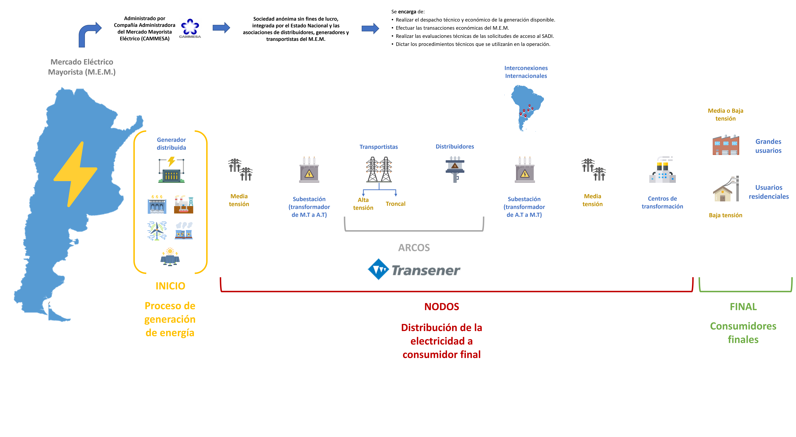
Diagrama MEM 01 — El recorrido completo de la energía eléctrica en Argentina
Para entender cómo llega la electricidad a nuestras casas, primero presentamos al Mercado Eléctrico Mayorista (M.E.M.). No es un lugar físico: es el sistema donde se realizan las transacciones de compra y venta de energía eléctrica en grandes volúmenes entre los actores del sector — generadores, distribuidores, grandes usuarios y transportistas.
En el M.E.M. conviven quienes producen la energía y quienes la compran para llevarla a los usuarios finales. La energía se "despacha" en tiempo real: en cada momento se decide qué central genera, cuánto y a qué costo, para satisfacer la demanda del país de la forma más eficiente posible.
Es importante entender que en Argentina la electricidad no se almacena masivamente: lo que se genera en un instante debe consumirse en ese mismo instante. Por eso la coordinación del sistema es crítica.
¿Qué es CAMMESA?
La Compañía Administradora del Mercado Mayorista Eléctrico es el organismo técnico-operativo que coordina el funcionamiento del M.E.M. Es una sociedad anónima sin fines de lucro, integrada por el Estado Nacional y las asociaciones de distribuidores, generadores y transportistas del M.E.M.
Sus funciones principales:
· Despacho técnico y económico: decide en tiempo real qué central debe generar energía para cubrir la demanda al menor costo posible.
· Transacciones económicas: calcula y liquida los pagos entre generadores, transportistas y distribuidores.
· Evaluación de acceso al SADI: analiza técnicamente las solicitudes de conexión a la red nacional.
· Procedimientos técnicos: dicta las normas operativas que rigen el funcionamiento del sistema eléctrico.
Paso 1 · Diagrama MEM 01 — bloque INICIO
El inicio: proceso de generación de energía
Fuentes, tipos de centrales y niveles de tensión de salida
Generación distribuidaMedia tensiónSADI
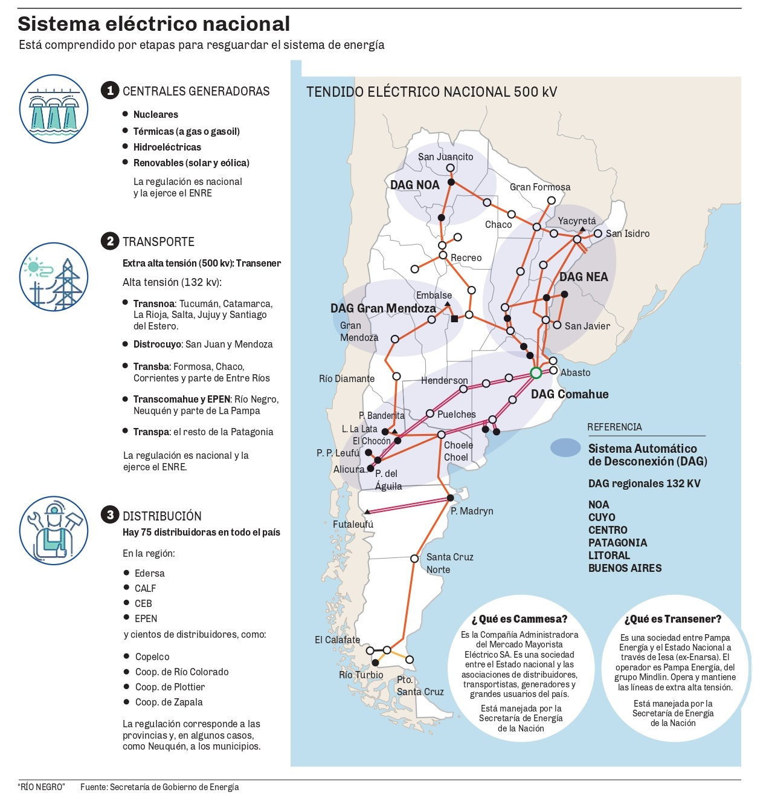
Sistema eléctrico nacional — etapas y principales actores (Fuente: Secretaría de Gobierno de Energía)
El proceso comienza en las centrales generadoras. Argentina cuenta con una matriz energética diversa:
Térmicas: gas natural, fuel oil o carbón — Ensenada de Barragán (~1.200 MW), Río Turbio (~240 MW).
Hidroeléctricas: aprovechan la energía cinética del agua — Yacyretá (~3.100 MW), Salto Grande (~1.890 MW), El Chocón (~1.200 MW).
Nucleares: fisión del uranio — Atucha I (~360 MW), Atucha II (~745 MW), Embalse (~600 MW).
Eólicas y solares: Cauchari (Jujuy, ~300 MW), Arauco (La Rioja, ~100 MW), Rawson (Chubut, ~50 MW).
La energía se genera en media tensión. Para transportarla eficientemente a largas distancias debe elevarse: reducir la corriente minimiza las pérdidas por efecto Joule (P = I² × R).
Materiales, características y criterios de selección
AluminioAceroCobreACSRCables desnudos
Los conductores utilizados en las líneas aéreas son básicamente cobre, aluminio y acero. Son cables desnudos — sin cobertura aislante. La aislación la proveen los aisladores instalados en cada estructura de soporte.
Material
Uso típico
Ventajas
Limitaciones
Aluminio (Al)
Líneas aéreas de A.T. (500 kV, 132 kV, 66 kV)
Liviano, abundante, bajo costo, buena conductividad
Menor resistencia mecánica — se combina con alma de acero
Acero (Fe)
Alma del cable ACSR e hilo de guardia
Alta resistencia a tracción, soporta el peso del vano
Mala conductividad eléctrica — no se usa solo como conductor
Cobre (Cu)
Redes urbanas de M.T. y B.T., interior de edificios
Máxima conductividad, compacto, fácil de trabajar
Muy pesado y costoso — inviable en líneas aéreas largas
Cable ACSR (Aluminum Conductor Steel Reinforced): el conductor más usado en transmisión de alta tensión. Hilos de aluminio trenzados alrededor de un alma central de acero. El aluminio conduce la corriente; el acero soporta el peso mecánico del vano entre torres.
Hilo de guardia: cable de acero instalado por encima de los conductores de fase, conectado a tierra en cada estructura. Genera un plano a 0 V que protege la línea ante la caída de un rayo. No conduce energía.
Niveles de tensión en Argentina:
· Baja tensión: 220 / 380 V · Media tensión: 13,2 kV — 33 kV
· Alta tensión: 66 kV — 132 kV — 220 kV — 330 kV · Extra alta tensión: 500 kV
¿Por qué se transmite en alta tensión? La ley de Joule: P = I² × R. Al subir la tensión 100 veces, la corriente baja 100 veces — las pérdidas se reducen drásticamente para la misma potencia transportada.
Paso 3 · Infraestructura física del sistema de A.T.
Las torres eléctricas: estructura y partes
Componentes, tipos de aisladores y configuraciones de fase
Torres metálicasAisladoresCable de guardiaCrucetas / ménsulasCimentación
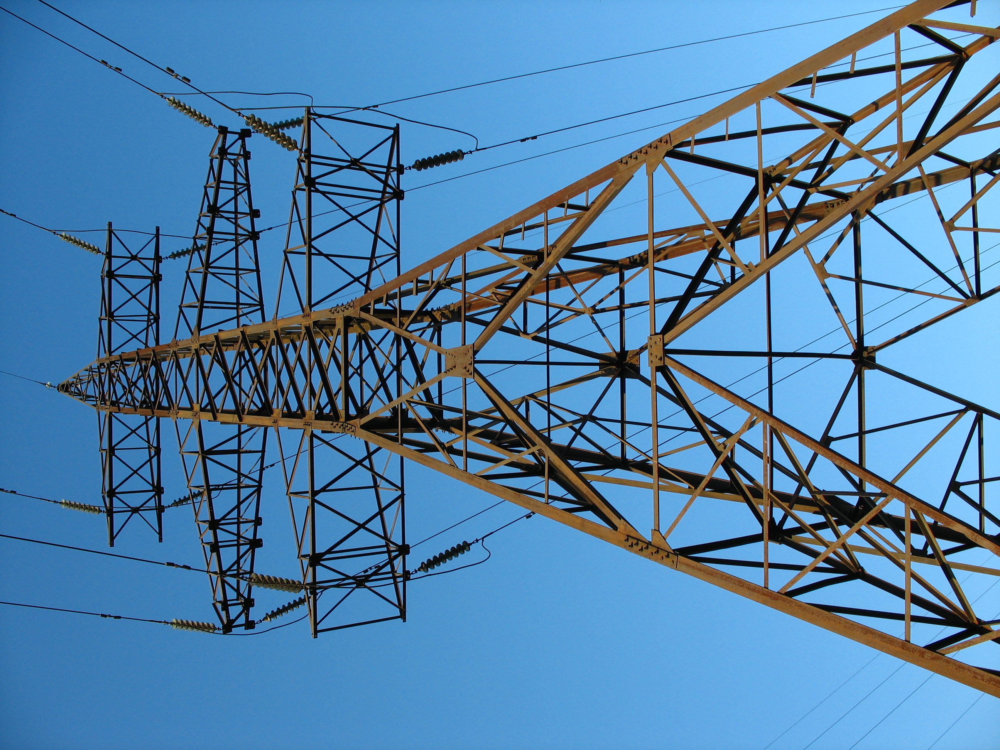
Torre de alta tensión — estructura reticulada de acero galvanizado, cadenas de aisladores y conductores de fase (ACSR)
Cable de guardia Acero, en la punta. Protege contra rayos. Conectado a tierra en cada estructura.
Crucetas (travesaños) Brazos horizontales que separan las fases. Ménsula: sale hacia un lado. Cruceta: cruza en ambos sentidos.
Aisladores Porcelana, vidrio templado o polímero. Impiden que la corriente baje por la estructura metálica.
Conductores de fase (ACSR) Cables desnudos. En 500 kV cada fase puede llevar 2–4 cables en paralelo ("haz de conductores").
Fuste / mástil en celosía Acero galvanizado con triangulaciones atornilladas. Vida útil mayor a 50 años.
Cimentación Hormigón armado enterrado. Resiste las cargas de viento y la tensión mecánica de los cables.
Tipos de estructura por función:
· S — Suspensión: la más común, tramos rectos. Los cables cuelgan de los aisladores.
· T — Terminal: inicio y fin de la línea.
· RR — Retención recta: anclaje intermedio en tramos largos (cada 12–15 suspensiones).
· RA — Retención angular: en cambios de dirección (ej: RA20°).
· Altura extra: S+1, S+2,5, RR+2. Código adicional: U (urbano), R (rural), CR (cruce ruta).
+
Profundizá — Tipos de estructuras, aisladores y configuraciones de fase
Fuente: UTN Reconquista · Ing. Claudio Cendra — Líneas aéreas de Media y Alta Tensión
Madera (eucalipto): líneas rurales de 13,2 kV y 33 kV. Troncos rectos impregnados con creosota o sal para resistir humedad. Normas IRAM 9501–9593.
Hormigón armado centrifugado / pretensado: media tensión y líneas de 132 kV. El pretensado tensiona la armadura antes de colar; al fraguar, la tensión residual aumenta la resistencia mecánica.
Metálicas reticuladas (celosía): acero galvanizado con triangulaciones atornilladas en obra. Las más usadas en 132 kV, 220 kV y 500 kV. El galvanizado (zinc) protege contra la corrosión.
Tubulares metálicas: postes cilíndricos de chapa de acero cilindrada, principalmente en media tensión urbana.
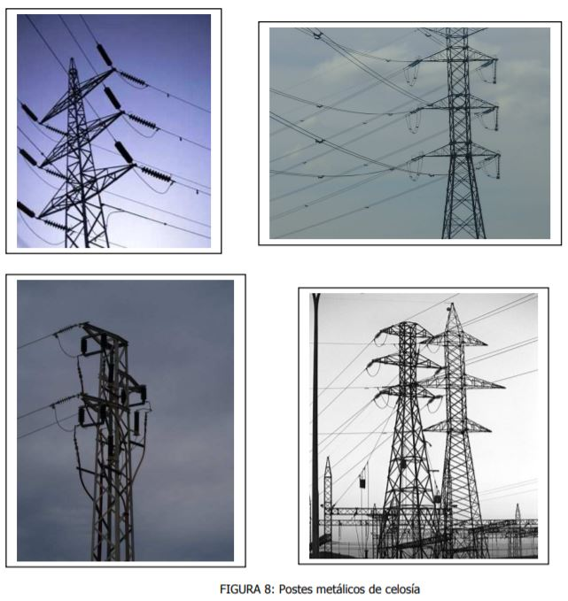
Fig. 8: Postes metálicos de celosía
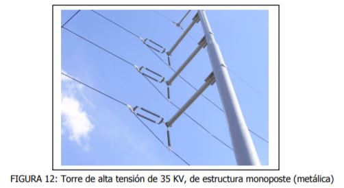
Fig. 12: Torre monoposte metálica (35 kV)
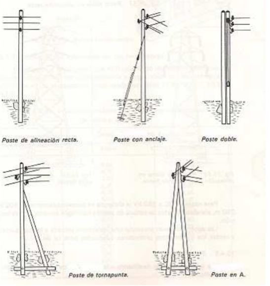
Fig. 9: Tipos de postes — alineación, anclaje, doble, tornapunta, en A
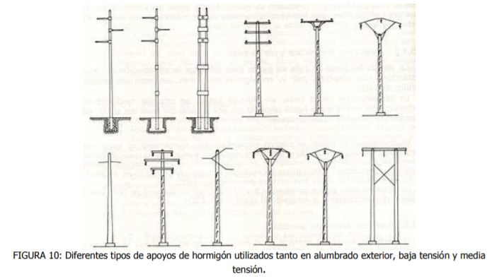
Fig. 10: Apoyos de hormigón (B.T. y M.T.)
Torres metálicas vs altura según nivel de tensión
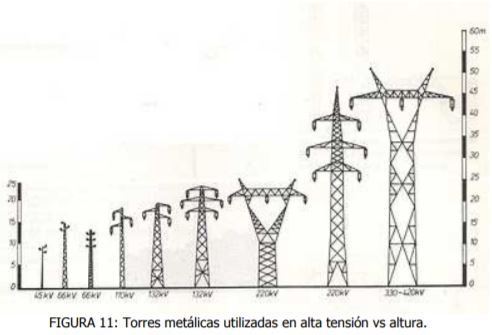
Fig. 11: A mayor nivel de tensión, mayor altura requiere la torre
Tipos de aisladores
Perno rígido: el cable "apoya" sobre el aislador. Se usa en media tensión.
Cadena de aisladores suspendidos: discos colgantes. Forma habitual en media, alta y extra alta tensión. En 500 kV la cadena puede tener 20–30 discos. Los de vidrio templado (verde) se fracturan visiblemente ante falla, facilitando inspección desde tierra.
En media y alta tensión las líneas no tienen neutro — solo las fases (sistema trifásico). Los conductores pueden disponerse en distintos planos:
Coplanar horizontal: las tres fases en un mismo plano horizontal, una al lado de otra.
Coplanar vertical: las tres fases una debajo de otra en el mismo mástil.
Triangular: fases en los vértices de un triángulo — reduce la inductancia mutua entre conductores.
Una misma estructura puede transportar simple, doble, triple o cuádruple terna según la potencia del corredor eléctrico.
Sistema de nomenclatura de estructuras
S
Suspensión — tramo recto
T
Terminal — inicio / fin de línea
RR
Retención recta — anclaje intermedio
RAα°
Retención angular — cambio de dirección
S+N
Suspensión con altura extra (ej: S+2,5)
SU / SR
Urbana / Rural
RCR
Retención cruce de ruta
E
Estructura especial
Ejemplo de distribución en un tramo de 23 piquetes: T — S×10 — RR — S×10 — RA
La siguiente imagen muestra en detalle los componentes de una conexión entre conductor y torre: la cadena de aisladores, la grapa de amarre, el descargador de arco eléctrico y el amortiguador de vibraciones mecánicas.
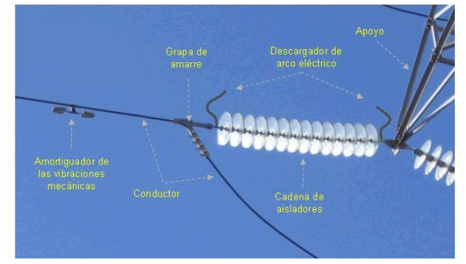
Fig. 13: Componentes de la conexión conductor–torre — cadena de aisladores, grapa de amarre, descargador de arco eléctrico y amortiguador de vibraciones
Paso 4 · Diagrama MEM 01 — zona ARCOS / NODOS
Los arcos: transporte de la electricidad (SADI)
Sistema Argentino de Interconexión — dos subsistemas de transporte
El Sistema Argentino de Interconexión (SADI) es la red de transmisión de energía eléctrica que conecta las centrales generadoras con los centros de consumo en todo el país. No es una sola empresa ni una sola línea: es un conjunto de infraestructuras físicas (líneas de alta tensión, subestaciones, torres) y una organización de actores que operan coordinadamente bajo la supervisión de CAMMESA.
En el diagrama MEM 01, la zona entre generadores y distribuidores se denomina ARCOS: los vínculos de transporte entre nodos. El SADI conecta prácticamente todo el país — excepto Tierra del Fuego, que opera con un sistema aislado propio.
Una característica fundamental del SADI es que permite que la energía generada en cualquier punto del país pueda ser consumida en cualquier otro, aprovechando las fuentes más eficientes disponibles en cada momento. Por ejemplo, en períodos de lluvias, la energía hidroeléctrica patagónica puede alimentar el AMBA; en períodos secos, las centrales térmicas del litoral compensan la caída hidráulica. Esta flexibilidad es posible gracias a la interconexión.
Funciona en dos niveles de tensión y empresas diferentes:
TRANSENER — Extra Alta Tensión (500 kV) · STAT
Es la empresa concesionaria que opera y mantiene el Sistema de Transporte de Alta Tensión (STAT): las líneas de 500 kV que mueven la energía entre regiones del país.
Es una sociedad entre Pampa Energía y el Estado Nacional (a través de Iesa/ex-Enarsa). El operador es Pampa Energía, del grupo Mindlin. Está manejada por la Secretaría de Energía.
Obligaciones:
· Operar y mantener la red de alta tensión concesionada.
· Garantizar la continuidad ininterrumpida del transporte.
· Asumir las inversiones para la expansión del sistema de transmisión.
Red Troncal — Alta Tensión (132 kV) · Sistema Troncal (ST)
Transporta la electricidad dentro de una misma región, entre plantas generadoras y distribuidores. La operan empresas regionales, una por zona:
· Transba — Formosa, Chaco, Corrientes, parte de Entre Ríos y Bs. As./AMBA
· Transnoa — Tucumán, Catamarca, La Rioja, Salta, Jujuy, Santiago del Estero
· Distrocuyo — San Juan y Mendoza
· Transcomahue — Río Negro, Neuquén y parte de La Pampa
· Transpa — el resto de la Patagonia
Además existen interconexiones internacionales con Uruguay, Brasil, Chile y Paraguay, que permiten intercambiar energía según disponibilidad y demanda regional.
Paso 5 · Diagrama MEM 01 — NODOS secundarios
Los nodos: subestaciones de transformación
Reducción progresiva de la tensión hacia el consumidor
Alta tensión 500/132 kVMedia tensión 13,2–33 kVBaja tensión 220 V
Una subestación de transformación es una instalación eléctrica cuya función principal es modificar los niveles de tensión de la energía para adecuarlos a las diferentes etapas de la red. Sin ellas, sería imposible llevar la electricidad desde las grandes centrales hasta los hogares.
El principio que utilizan es el del transformador eléctrico: un dispositivo que, aprovechando la inducción electromagnética, transfiere energía entre dos circuitos cambiando la tensión. Al "subir" la tensión, la corriente baja y las pérdidas en el transporte se reducen. Al "bajar" la tensión, la corriente sube y la energía queda lista para el uso doméstico o industrial.
La reducción de tensión es progresiva: no se pasa de 500 kV a 220 V en un solo paso. El proceso ocurre en varias etapas para garantizar seguridad, eficiencia y control en cada punto de la red.
Subestación (A.T. → M.T.): recibe energía en alta tensión (500 kV o 132 kV) y la transforma a media tensión (33 kV o 13,2 kV) para distribución regional.
Centros de transformación: transformadores en postes o cabinas a pie de calle. Llevan la energía de media tensión a baja tensión (220 V), lista para el usuario final.
Los distribuidores son empresas concesionarias que operan las redes de media y baja tensión dentro de un área geográfica específica, llevando la energía hasta el medidor del usuario.
Obligaciones de los distribuidores (MEM 02):
· Proporcionar el servicio a todos los usuarios finales que lo soliciten en su área de concesión.
· Definir y garantizar la calidad del servicio.
· Asumir las inversiones para la expansión del sistema de distribución.
Distribuidoras principales: Edenor (norte del GBA), Edesur (sur del GBA y CABA), Edelap (La Plata), Eden y Edes (interior bonaerense). En muchas localidades del interior operan cooperativas eléctricas municipales.
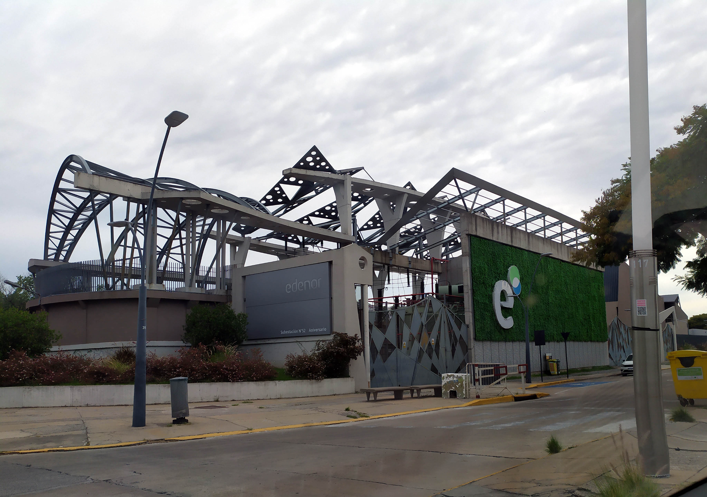
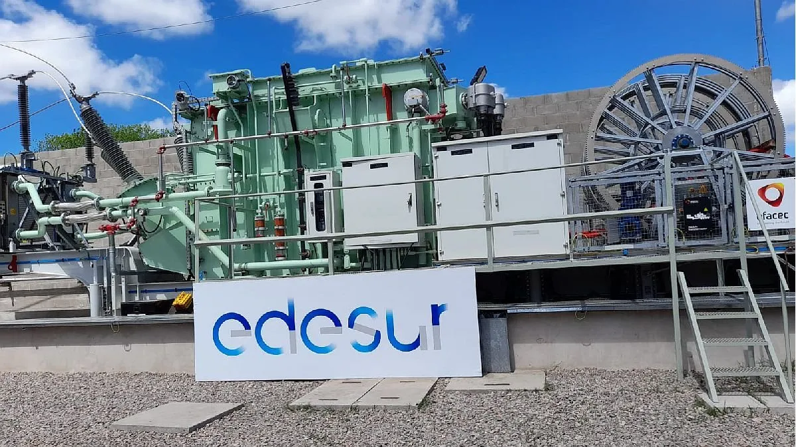
Edenor (izq.) y Edesur (der.) — las dos principales distribuidoras del Área Metropolitana de Buenos Aires
Consumidores finales:
· Grandes usuarios: industrias y comercios de gran consumo — reciben en M.T. o B.T. directamente.
· Usuarios residenciales: hogares — reciben el servicio en baja tensión (220 V).
Marco regulatorio · Diagrama MEM 02 — bloque inferior
El marco regulatorio (MEM 02)
Secretaría de Energía y ENRE — control del sistema como servicio público
Secretaría de EnergíaENREServicio públicoConcesiones
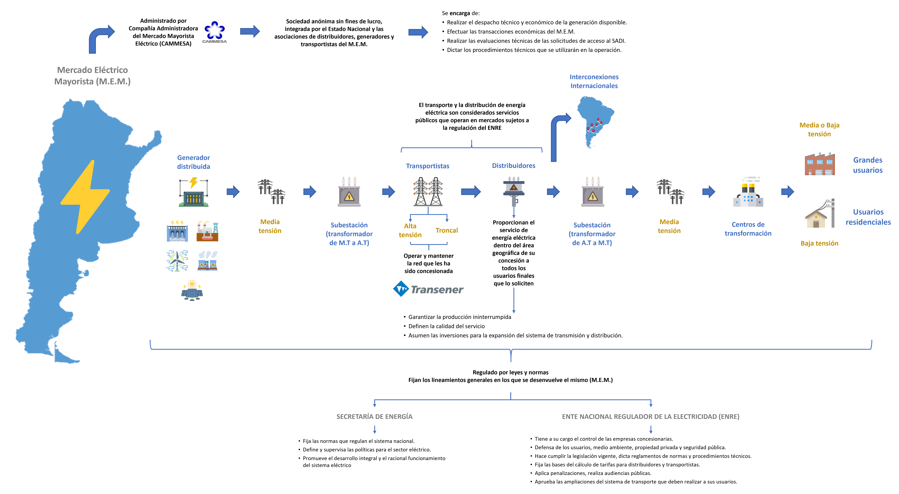
Diagrama MEM 02 — Marco regulatorio del sistema eléctrico argentino
El transporte y la distribución son servicios públicos que operan en mercados sujetos a la regulación del ENRE. El sistema está regido por leyes y normas que fijan los lineamientos generales del M.E.M.
Secretaría de Energía — hace política:
· Fija las normas que regulan el sistema eléctrico nacional.
· Define y supervisa las políticas para el sector eléctrico.
· Promueve el desarrollo integral y el funcionamiento racional del sistema.
ENRE — hace control:
· Tiene a su cargo el control de las empresas concesionarias.
· Defensa de los usuarios, medioambiente, propiedad privada y seguridad pública.
· Hace cumplir la legislación vigente y dicta reglamentos de normas y procedimientos técnicos.
· Fija las bases de cálculo de tarifas para distribuidores y transportistas.
· Aplica penalizaciones y realiza audiencias públicas.
· Aprueba las ampliaciones del sistema de transporte.
Distinción clave: la Secretaría de Energía define la política del sector. El ENRE fiscaliza, dicta reglamentos técnicos y fija las bases de cálculo tarifario — no las tarifas finales directamente.